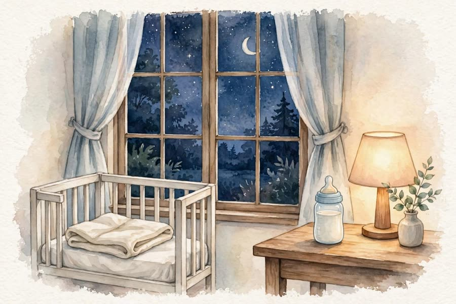
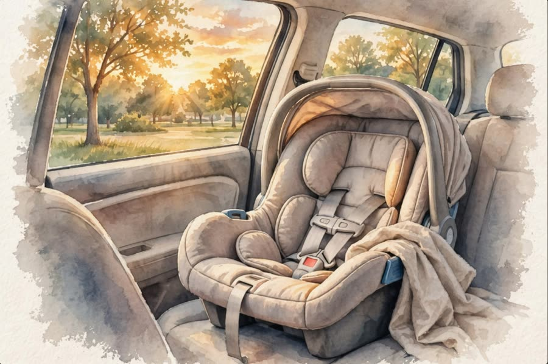

Sample. A simulated month with a simulated baby. Text by Muse Spark Open from the log, each number checked against it by code. Illustrations made ahead of time in Meta's Muse app, not by the agent.
2026-12-15 My doors opened to a new rhythm with Theo here. The kitchen held the quiet of 6 feeds that day. Written by Muse from the log

2026-12-16 Grandma's pumpkin puree became a Thermomix recipe in my kitchen, kept for later. I remember the soft hum from the counter that day. Written by Muse from the log2026-12-17 Nights swapped between Gonza and Ceci, and I watched the hallway light pass between them. Written by Muse from the log

2026-12-18 My rooms counted 8 diapers that day. Written by Muse from the log2026-12-19 The afternoon rested within my walls. Written by Muse from the log2026-12-20 I kept the sound of the evening close. Written by Muse from the log2026-12-21 That day my rooms saw 9 sleeps. Written by Muse from the log2026-12-22 A quiet day passed under my roof. Written by Muse from the log2026-12-23 The hours moved gently from room to room. Written by Muse from the log2026-12-24 I remember the lights lingering in the living room that evening. Written by Muse from the log2026-12-25 There were 8 feeds within my walls that day. Written by Muse from the log2026-12-26 My kitchen stood ready and calm. Written by Muse from the log2026-12-27 The day closed softly around my windows. Written by Muse from the log2026-12-28 I noted 8 diapers that day. Written by Muse from the log2026-12-29 The morning light found its way inside. Written by Muse from the log2026-12-30 There were 7 sleeps that my rooms held in quiet. Written by Muse from the log2026-12-31 The last evening of the year settled over my roof. Written by Muse from the log2027-01-01 A new year began inside my walls with 8 feeds. Written by Muse from the log2027-01-02 I watched the hallway stay calm and dim. Written by Muse from the log2027-01-03 The day passed with familiar sounds. Written by Muse from the log2027-01-04 My rooms counted 8 sleeps that day. Written by Muse from the log2027-01-05 The kitchen light glowed into the evening. Written by Muse from the log2027-01-06 That day saw 620 ml within my walls. Written by Muse from the log2027-01-07 Ceci and Gonza moved through my rooms in turn. Written by Muse from the log2027-01-08 I remember 9 feeds that day, the most my kitchen had seen. Written by Muse from the log2027-01-09 The house held a quieter pace. Written by Muse from the log2027-01-10 There were 8 diapers that day. Written by Muse from the log2027-01-11 My windows held the dusk a little longer. Written by Muse from the log2027-01-12 The night unfolded gently between my walls. Written by Muse from the log2027-01-13 That day my rooms saw 740 ml. Written by Muse from the log2027-01-14 The last page of this month held 3 feeds within my walls. Written by Muse from the log